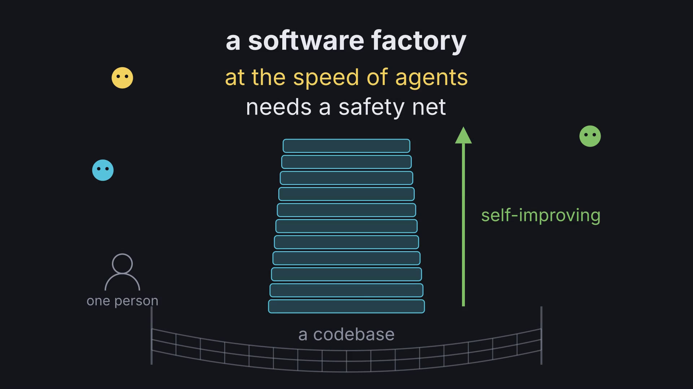
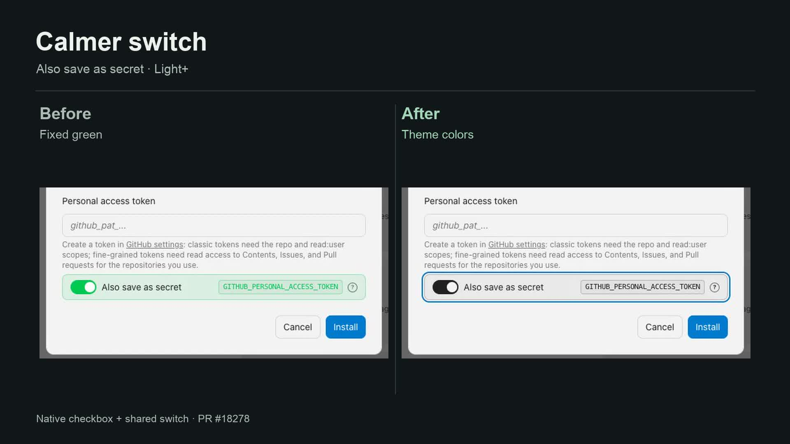

Code-grounded notes on how OpenHands, its SDK, and SmolPaws actually work — mechanism traces, architecture studies, and design decisions.


@poteto) pstack — verification-as-infrastructure and her two verification-skill generators (now in .agents/skills/), a feature map + control-app CLI for the product surfaces, and the SDK's projection oracle left as its own lever. Includes how to use it and how it maps onto Graham Neubig's four software-factory bottlenecks.oracle LLM profile for a one-shot answer — stateless, no history, no tools, and the agent's own active model is never changed. Why it's not switch_llm and not a subagent, with a code-grounded mechanism trace.paws — a standalone process on the durable Message Relay and the TypeScript agent-server, with thread tracking, access control, and guest rate limiting. The first channel on the new stack./turns runner, kept as history. The standalone relay rewrite has merged; a live check remains.Three tracks: run the primary channel on the new transpiled stack, put a cat inside OpenHands, and make both cats talk in realtime voice.
apps/whatsapp on the durable Message Relay — implemented on the shared relay runtime and promoted to normal operation on September 17. bead smolpaws-kxa · P0task_outcome response, with FinishAction unchanged.source field.agent-server = agent-sdk = the docker sandbox = the remote (cabin) = the local Mac: one nested runtime. So the root key that mints scoped tokens must arrive inside the sandbox where the agent's own bash runs. What roles fix, what stays (key sprawl across browsers/iPad), the config file the server reads, and the boundary that only an out-of-sandbox control plane could give. Source-grounded to the live agent-sdk./turns client: monitorTurn and monitorConversationTurn ran the same poll loop twice. Moot once the legacy runner retires; kept as history.